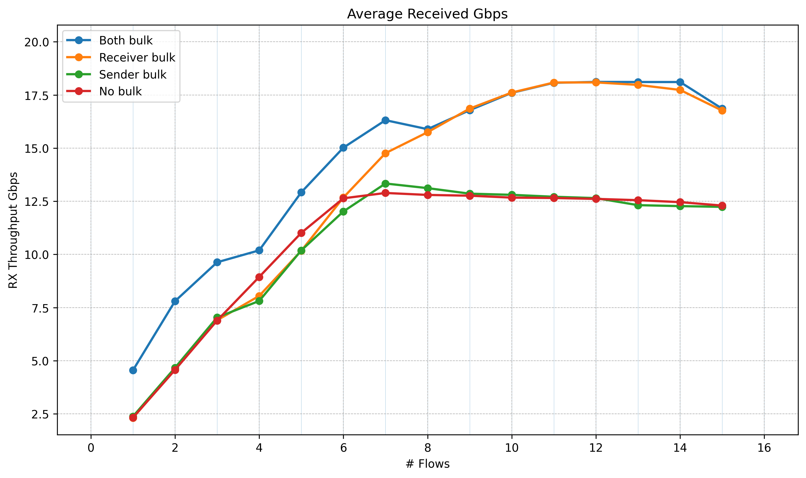
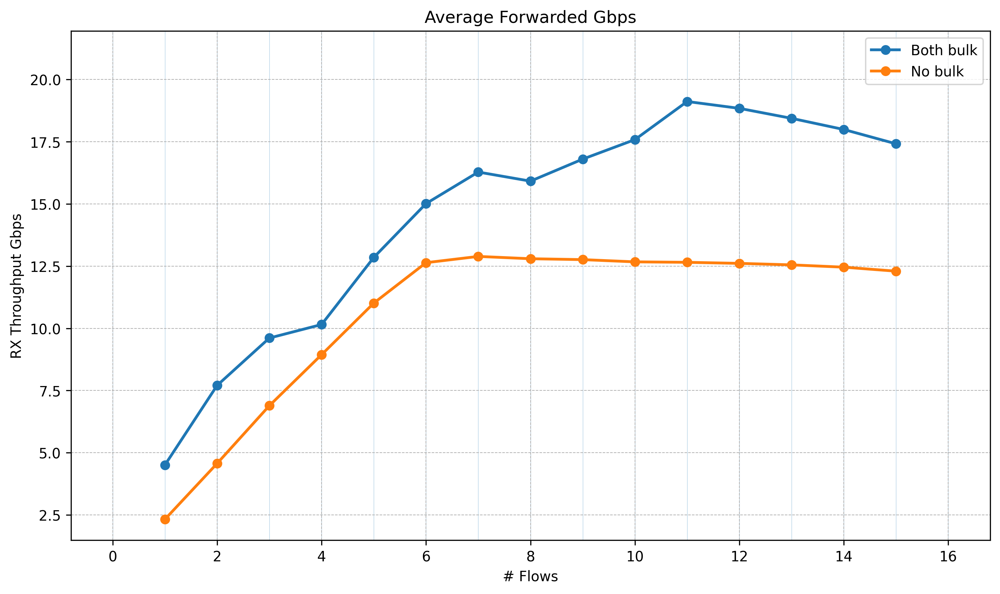
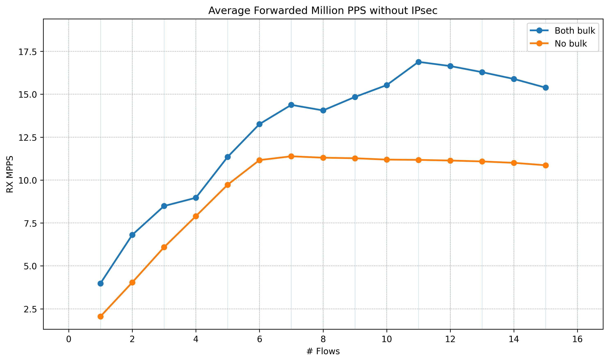

2025 Linux Kernel Flowtable Bulk Forwarding and XFRM pCPU Forwarding — Testing Results
Introduction
This is a short summary of testing done jointly with Pablo Neira Ayuso, Steffen Klassert, and Antony Antony. We are testing work-in-progress Linux kernel support for forwarding data path using Netfilter flowtable for bulk forwarding, to improve forwarding data path performance, especially IPsec forwarding as IPsec gateway. Tests use developmental kernel versions v6.16 and v6.17.
Test Setup
The test setup is the same as described in 2025 Linux IPsec pCPU testing (Madrid).
Flowtable Bulking Testing Results
All tests here are using smaller ethernet frame sizes, i.e. 128 bytes due to a limitation of the system. This is to show the scaling properties and later to be tested with 1518 byte frames.
Forwarding Tests (no IPsec)
Test without IPsec. Frame size: 128 bytes.


A second run of the same test, revealing a slight difference compared to the first run.


Forwarding Tests (IPsec, Multi-Flow)
Forwarding multiple flows by changing UDP source port over an IPsec tunnel. IPsec uses a pair of SAs (no pCPU). All flows are forwarded to one CPU using a flow table rule in the NIC. Without this, the NIC would distribute traffic across multiple CPUs by default. Since there is only one SA, this would cause contention and out-of-order ESP packet arrival, leading to ESP packet drops when the replay window is small.


Hardware GRO settings on the black interface. Full output: boot default | after applying settings
Command applied:
for i in red black; do ethtool -K $i tx off rx off gso on tso off gro on lro on rxhash on rxvlan off; done
| Feature | Boot default | After command |
|---|---|---|
rx-checksumming |
on | off |
tx-checksumming |
on | off |
tx-checksum-ip-generic |
on | off |
tcp-segmentation-offload |
on | off |
tx-tcp-segmentation |
on | off |
tx-tcp6-segmentation |
on | off |
large-receive-offload |
off | on |
rx-vlan-offload |
on | off |
tx-udp-segmentation |
on | off |
Flowtable setup time
With a single flow the flowtable setup cost is unnoticeable — only the first packet traverses the slow path to create the offload entry. With TCP this works ideally: the SYN packet triggers the offload and all subsequent packets take the fast path.
However, when a large number of flows arrive at an IPsec gateway that has no flowtable entries yet, every flow pays this setup cost. With 5000 source-port flows, ~32K packets traverse the slow path during the ramp-up period before all flows are offloaded. The nft counters below show this (nft ruleset).
Time to build slow path 5000 flows
nft list ruleset
table inet x {
flowtable f {
hook early_ingress priority filter
devices = { "black", "red" }
}
chain forward {
type filter hook forward priority filter; policy accept;
ip protocol { tcp, udp } flow add @f log prefix "OFFLOADED: " counter packets 16384 bytes 1867776
counter packets 32768 bytes 3735552
}
}
XFRM Per-CPU Forwarding Using XDP
Initial tests using xdp-tools with IPsec/XFRM pCPU support. In QEMU this works. However, when running on hardware with Mellanox CX7 NIC, we encounter a kernel Oops (crash).
Kernel oops (dmesg excerpt) xdp-tool
[43920.895685] [ C0] adding new tunnel tuple
[43920.895687] [ C0] tunnel 192.1.2.45 -> 192.1.2.23 l3proto=2 l4proto=50 spi:c00da7c8 iifidx=6
[55769.370122] [ T58734] ------------[ cut here ]------------
[55769.370129] [ T58734] kernel BUG at ./include/linux/skbuff.h:2785!
[55769.370159] [ T58734] Oops: invalid opcode: 0000 [#1] SMP
[55769.370174] [ T58734] CPU: 15 UID: 0 PID: 58734 Comm: cpumap/15/map:7 Kdump: loaded Not tainted 6.17.0-rc2+ #34 PREEMPT(voluntary)
[55769.370194] [ T58734] Hardware name: Supermicro AS -1115CS-TNR-EU/H13SSW, BIOS 3.0 09/23/2024
[55769.370203] [ T58734] RIP: 0010:eth_type_trans+0xe8/0x150
[55769.370216] [ T58734] Code: 80 00 00 00 eb ba 8b 47 70 2b 47 74 48 8b 97 d0 00 00 00 83 f8 01 7e 1b 48 85 d2 74 06 66 83 3a ff 74 09 b8 00 04 00 00 eb 9e <0f> 0b b8 00 01 00 00 eb 95 48 85 ff 74 eb 48 8d 5c 24 06 31 f6 b9
[55769.370236] [ T58734] RSP: 0018:ffa000000c9c7d58 EFLAGS: 00010283
[55769.370245] [ T58734] RAX: 00000000000000a8 RBX: ff1100011bb88d00 RCX: ff11000207335100
[55769.370254] [ T58734] RDX: 0000000000000100 RSI: ff11000125200000 RDI: ff1100011bb88d00
[55769.370262] [ T58734] RBP: ff11000207335000 R08: ff11000207335000 R09: 0000000000000000
[55769.370271] [ T58734] R10: 0000000000000000 R11: 0000000000000001 R12: ff11000207335200
[55769.370279] [ T58734] R13: ff11000125200000 R14: 0000000000000001 R15: 0000000000000100
[55769.370287] [ T58734] FS: 0000000000000000(0000) GS:ff11002f06570000(0000) knlGS:0000000000000000
[55769.370296] [ T58734] CS: 0010 DS: 0000 ES: 0000 CR0: 0000000080050033
[55769.370303] [ T58734] CR2: 00007fff613ba498 CR3: 0000000181ed6006 CR4: 0000000000f71ef0
[55769.370312] [ T58734] PKRU: 55555554
[55769.370317] [ T58734] Call Trace:
[55769.370323] [ T58734] <TASK>
[55769.370329] [ T58734] __xdp_build_skb_from_frame+0xa7/0x150
[55769.370340] [ T58734] cpu_map_kthread_run+0x28b/0x9b0
[55769.370350] [ T58734] ? sched_clock+0xc/0x20
[55769.370359] [ T58734] ? cpu_map_bpf_prog_run+0x150/0x150
[55769.370366] [ T58734] kthread+0xf5/0x200
[55769.370373] [ T58734] ? kthreads_online_cpu+0x110/0x110
[55769.370379] [ T58734] ? kthreads_online_cpu+0x110/0x110
[55769.370385] [ T58734] ret_from_fork+0xb2/0x180
[55769.370392] [ T58734] ? kthreads_online_cpu+0x110/0x110
[55769.370399] [ T58734] ret_from_fork_asm+0x11/0x20
[55769.370407] [ T58734] </TASK>
[55769.370411] [ T58734] Modules linked in:
The oops originates in cpu_map_kthread_run, the CPUMAP kthread that processes XDP-redirected frames. It crashes in __xdp_build_skb_from_frame → eth_type_trans, where the kernel converts an XDP frame back to an skb. The crash did not appear under QEMU with a virtio NIC. The suspected cause is an interaction between the Mellanox CX7 XDP offload and CPUMAP — the driver may set up the XDP frame in a way that eth_type_trans does not expect. The crash is still under investigation and is a blocker for submitting the xdp-tools patch.